09/08/2019 — Tắc hoàn toàn cấp thân chung động mạch vành trái biểu hiện thế nào trên điện tâm đồ?
Bản dịch tiếng Việt của bài "How does Acute Total Left Main Coronary occlusion present on the ECG?" – Dr. Smith’s ECG Blog. Giữ nguyên toàn bộ 14 hình ảnh của bản gốc.
Bài viết của Smith và Meyers
Sam Ghali (https://twitter.com/EM_RESUS) vừa hỏi tôi (Smith):
Thêm bài này: https://drsmithsecgblog.com/sudden-shock-with-nasty-looking-ecg/
Thêm bài này:
“Steve, các trường hợp *tắc* thân chung động mạch vành trái (left main) (tắc thực sự, kèm
thiếu máu cục bộ xuyên thành) có ST chênh xuống hay ST chênh lên ở aVR?”
Smith và Meyers trả lời:
Thứ nhất, tắc thân chung (LM) hiếm gặp ở khoa cấp cứu (ED) vì phần lớn các bệnh nhân này tử vong trước khi kịp ghi được điện tâm đồ 12 chuyển đạo.
Nhưng nếu họ đến được viện:
Biểu hiện rất thường gặp là ST chênh xuống (STD) lan tỏa kèm ST chênh lên (STE) soi gương ở aVR KHÔNG phải là tắc thân chung; nó có thể do hội chứng vành cấp (ACS) với tổn thương thân chung gần hoàn toàn (subtotal), nhưng thường gặp hơn nhiều là do các tình trạng không phải ACS, đặc biệt là thiếu máu cục bộ do tăng nhu cầu. Trong những trường hợp này, STE ở aVR luôn là soi gương với ST chênh xuống của thiếu máu cục bộ dưới nội tâm mạc ở nơi khác (vectơ ST chênh xuống hướng về II và V5).
Tắc hoàn toàn thân chung có thể biểu hiện với STE hoặc STD ở aVR.
Khi tắc hoàn toàn thân chung biểu hiện với STE ở aVR, LUÔN LUÔN có ST chênh lên ở nơi khác khiến STEMI rõ ràng hơn; nói cách khác, STE không bao giờ giới hạn chỉ ở aVR mà là một phần của một STEMI diện rộng và thường rõ ràng.
Hình ảnh thấy được có thể, hoặc có thể không, đặc trưng riêng cho tắc thân chung. Một số trường hợp tắc hoàn toàn LAD biểu hiện trên điện tâm đồ tương tự như một số trường hợp tắc thân chung. Tuy nhiên, tất cả đều rõ ràng là STEMI diện rộng.
Xin nhắc lại phần quan trọng nhất liên quan đến câu hỏi của anh: tắc thân chung không biểu hiện bằng STE đơn độc ở aVR. Tùy theo vectơ STE của tắc thân chung hiện ra ở đâu trên điện tâm đồ, aVR có thể có STE, hoặc STD, hoặc không có cả hai, và chuyển đạo aVR sẽ không phải là phần quan trọng trong việc đọc điện tâm đồ ở những trường hợp này.
Dưới đây là 9 ca bệnh riêng lẻ (anecdotal) về tắc hoàn toàn thực sự thân chung động mạch vành trái, chỉ một ca có tuần hoàn bàng hệ:
—6 ca có STE ở aVR; 1 ca không có dịch chuyển ST ở aVR; 2 ca có STD ở aVR
—3 ca có hình ảnh OMI phía Bắc (Northern OMI), 2 ca có RBBB + LAFB, 2 ca có STE aVR kèm STD lan tỏa, 2 ca có hình “vây cá mập” (Shark Fin) giống OMI LAD đoạn gần.
Điện tâm đồ có thể có nhiều kiểu biểu hiện khác nhau trong tắc thân chung. Sau đây tôi giải thích:
Thứ nhất, ta không biết chắc tình trạng của động mạch tại thời điểm ghi điện tâm đồ. Nó có thể đã (vừa đủ) mở nhưng bị tắc vào thời điểm chụp mạch. Dù vậy, tắc hoàn toàn thân chung được dự đoán sẽ gây thiếu máu cục bộ dưới thượng tâm mạc (STE) ở các vùng cơ tim sau:
Vectơ STE
1. Hướng ra trước (phía trước) do LAD (STE ở V2-V4, có thể cả V5, V6)
2. Hướng sang bên (sang trái) do:
2a. D1 (STE ở I, aVL, V5, V6) và
2b. Động mạch mũ (STE ở I, aVL V4-V6)
3. Vách liên thất (hướng sang phải) từ LAD (STE ở aVR, V1, ST chênh xuống ở V4-V6 soi gương)
ST chênh lên từ (2.) ở trên có thể triệt tiêu hoặc đảo ngược cả STD soi gương ở V4-V6 lẫn STE ở V1 và aVR.
4. Phía sau (do tắc động mạch mũ) (ST chênh xuống ở các chuyển đạo trước)
ST chênh xuống này có thể triệt tiêu STE ở các chuyển đạo trước!
5. Hướng lên trên do thiếu máu cục bộ dưới thượng tâm mạc ở phần nhỏ của đáy tim, bao gồm vách liên thất, vốn hướng lên trên (STE ở V1, aVL, aVR)
Điều này có thể dẫn đến ST chênh xuống ở các chuyển đạo dưới, hay OMI phía Bắc (Northern OMI)
Mỗi vectơ ST sẽ đóng góp khác nhau ở những bệnh nhân khác nhau. Chúng cộng lại với độ lớn khác nhau, tạo ra nhiều kiểu biểu hiện điện tâm đồ khác nhau.
Ở cuối bài, tôi đã in lại phần về aVR trong bài báo của tôi về điện tâm đồ trong ACS đăng trên Canadian Journal of Cardiology, có một số cập nhật:
New Insights into the Use of the 12-lead Electrocardiogram for Diagnosing Acute Myocardial Infarction in the Emergency Department (Những hiểu biết mới về việc sử dụng điện tâm đồ mười hai chuyển đạo để chẩn đoán nhồi máu cơ tim cấp tại khoa cấp cứu)
Ca 1.
Chris Mondie thuộc Newark Beth Israel Emergency Medicine Residency (chương trình nội trú Y học cấp cứu) đã gửi ca 1 dưới đây về một trường hợp tắc 100% thân chung. Các bình luận/câu hỏi của anh ấy được chèn bên dưới điện tâm đồ:
Một phụ nữ 50 mấy tuổi đến viện vì đau ngực từng cơn trong 3 ngày, nặng lên vào ngày đến viện, kèm vã mồ hôi và lan ra cánh tay trái, cùng với đau bụng.
Đây là điện tâm đồ của bà:

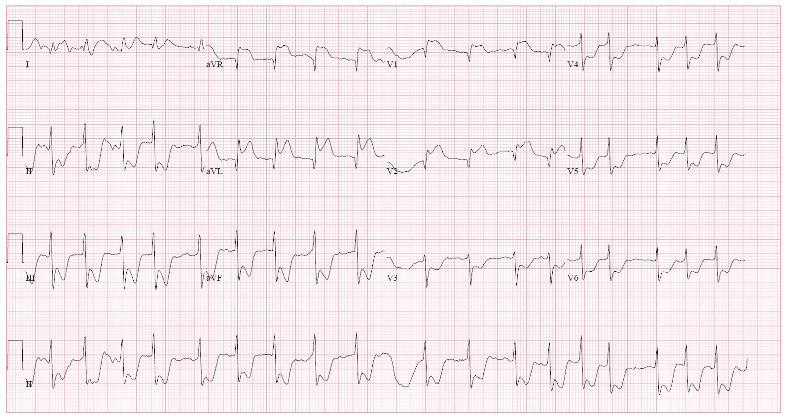
| Một STEMI rõ ràng, nhưng là động mạch nào? ST chênh lên ở aVR |
Phòng thông tim (cath lab) đã được kích hoạt và phát hiện tắc 100% thân chung động mạch vành trái.
Đây là hình ảnh “OMI phía Bắc” (Northern OMI).
Bình luận/câu hỏi của Chris:
“Mọi ca “ST chênh lên ở aVR” mà tôi từng gặp đều là bệnh ba nhánh mạch vành, suy tuần hoàn (insufficiency), hoặc thiếu máu cục bộ dưới nội tâm mạc do tăng nhu cầu/toàn bộ thứ phát sau một tình trạng nhiễm khuẩn huyết/tăng nhu cầu chuyển hóa tiềm ẩn nào đó.”
“Câu hỏi của tôi là: chúng tôi được dạy rằng ST chênh lên ở aVR kèm ST chênh xuống lan tỏa có thể gợi ý tổn thương thân chung động mạch vành trái (LMCA).”
Smith: điều được dạy này là sai; xem bài này: ST Elevation in Lead aVR, with diffuse ST depression, does not represent left main occlusion (ST chênh lên ở chuyển đạo aVR kèm ST chênh xuống lan tỏa không biểu thị tắc thân chung).
“Trong ca của tôi ở trên quả thật có STE đáng kể ở aVR cũng như V1, cũng có STE ở aVL và V2, điều này dường như trái với khẳng định “STD lan tỏa”…. Tại sao chúng ta không thấy STE thành bên trong hình ảnh kinh điển được dạy là “STE ở aVR, và STD lan tỏa”? Nếu tổn thương ở đoạn gần như vậy, chẳng phải thông thường ta sẽ thấy STE thành bên thay vì STD ở các chuyển đạo bên hay sao?”
Smith trả lời về ca bệnh: “Không có gì ngạc nhiên khi điện tâm đồ này là của một bệnh nhân tắc cấp thân chung.” và tôi đã gửi anh ấy phần giải thích về vectơ ST ở trên.
Ca 2.
Đây là một ca tắc thân chung khác đã được xác định, ở một phụ nữ trẻ đến viện vì phù phổi đột ngột, được ghi điện tâm đồ này, sau đó ngừng tim và được hồi sức thành công sau 30 phút hồi sinh tim phổi (CPR):

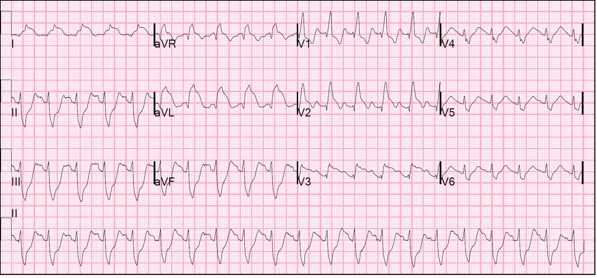
| Bản ghi có nhịp nhanh xoang kèm RBBB và LAFB, và STE ở V2-V6 cũng như I, aVL Hình ảnh này cũng có thể gặp y như vậy trong tắc LAD. Bệnh nhân đã được xác định tắc 100% thân chung động mạch vành trái. Không có dịch chuyển ST ở aVR. |
Hình ảnh RBBB/LAFB này cũng là hình ảnh thường gặp nhất trong loạt ca gồm 7 trường hợp tắc hoàn toàn thân chung của Fiol và cs. (tài liệu tham khảo 64 bên dưới).
Xem bài báo này của Widimsky và cs., cho thấy mối liên quan chặt chẽ của RBBB, đặc biệt khi kèm LAFB, với tắc LAD. Hơn nữa, trong số 35 bệnh nhân tắc cấp thân chung động mạch vành trái, 9 người có RBBB (phần lớn kèm LAFB) trên điện tâm đồ lúc nhập viện.
Ca 3.
Đây là một ca tắc hoàn toàn thân chung khác: Total eclipse of the heart (Nhật thực toàn phần của trái tim) — do Pendell viết

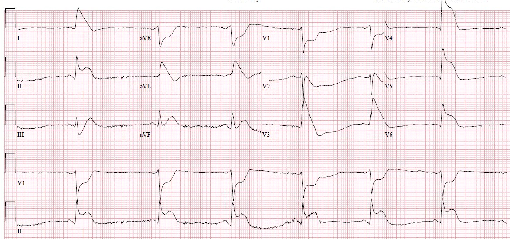
| ST chênh xuống ở aVR |
Và có kẻ thêm các đường để chỉ ra điểm kết thúc của QRS:

| ST chênh xuống ở aVR |
Ca 4.
Đây là một ca tắc 100% thân chung khác do Rohin Francis của Medlife Crisis đóng góp (https://twitter.com/MedCrisis)
Điện tâm đồ hình “vây cá mập” (shark fin) ở I, aVL, V4 và V5. Động mạch nào? Gợi ý: bệnh nhân đang sốc và đã được đặt ECMO

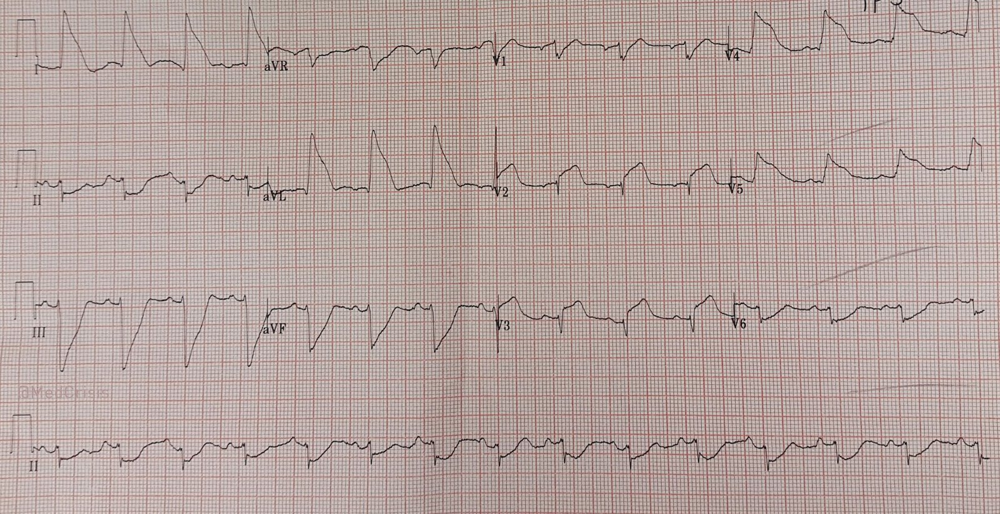
| ST chênh xuống ở aVR |
Đây là phim chụp mạch vành của ca bệnh do Rohin gửi:

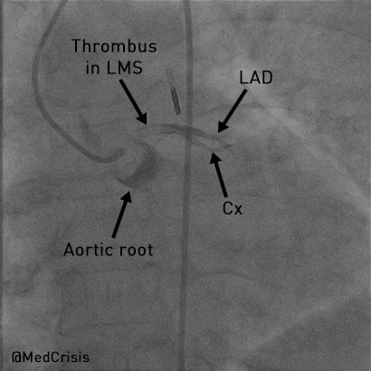
Ca 5.
Đây là một ca hẹp 95% thân chung với dòng chảy TIMI-1: A Hybrid of de Winter’s T-waves and Diffuse Subendocardial Ischemia: Left Main Ischemia (Dạng lai giữa sóng T de Winter và thiếu máu cục bộ dưới nội tâm mạc lan tỏa: thiếu máu cục bộ do thân chung)

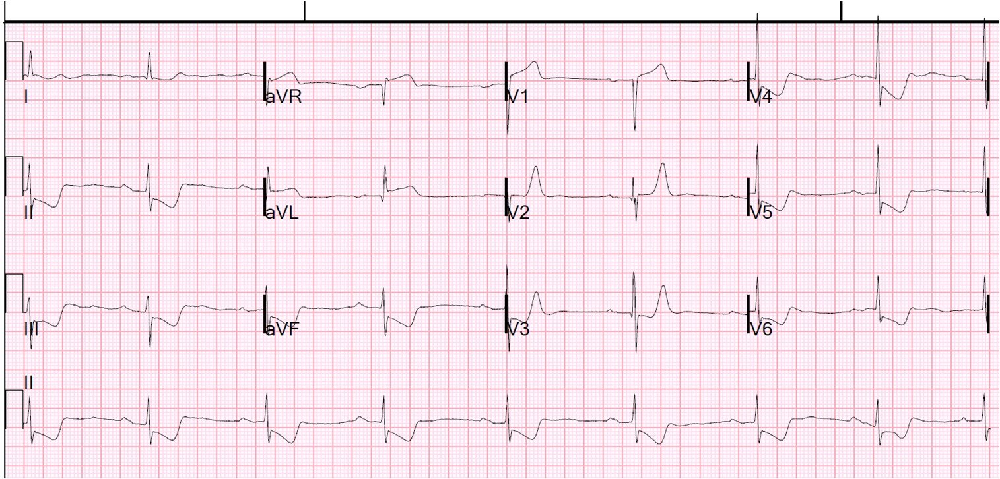
| ST chênh lên ở aVR. Nhưng ca này hơi khác: vẫn còn một chút dòng chảy tối thiểu, như bạn có thể thấy trên phim chụp mạch vành bên dưới. Và do đó đây là dạng lai giữa sóng T de Winter và thiếu máu cục bộ dưới nội tâm mạc lan tỏa. |
Đây là phim chụp mạch vành:

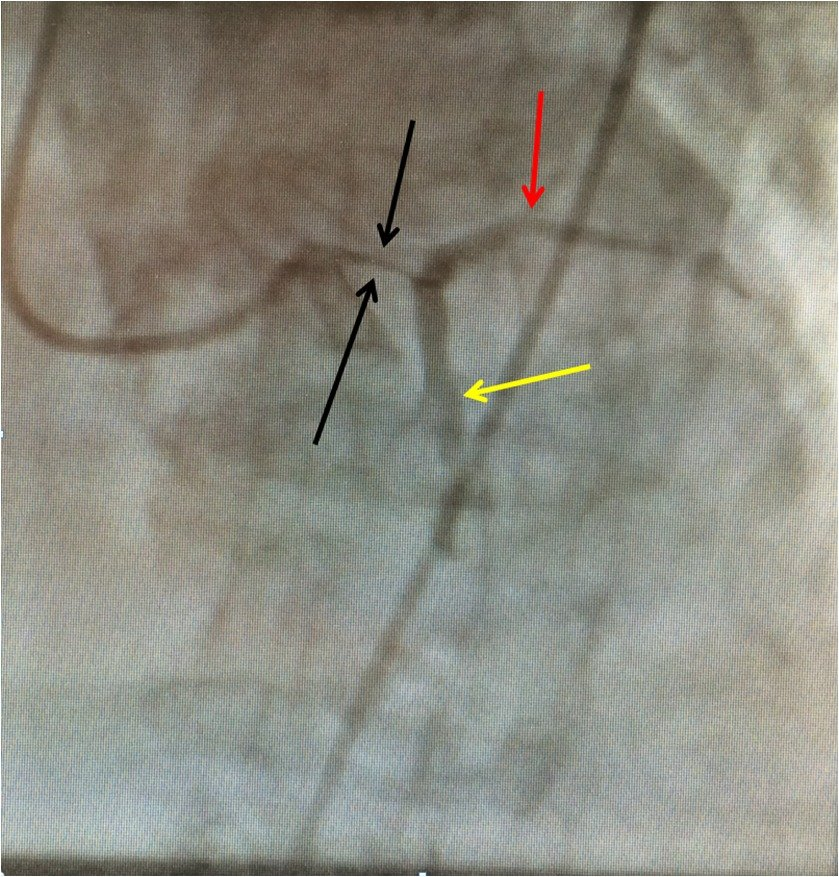
| Các mũi tên đen là thân chung bị hẹp rất khít, mũi tên đỏ là LAD còn dòng chảy, và mũi tên vàng là động mạch mũ còn dòng chảy. |
Ca 6.
Hãy cảnh giác với đau thắt ngực tăng dần (crescendo angina) ở bệnh nhân đã biết có bệnh động mạch vành (CAD)

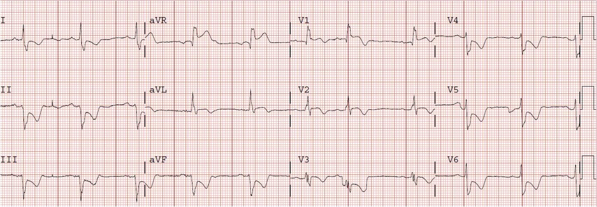
| ST chênh lên ở aVR. Đây là một ca OMI phía Bắc khác, với STE ở aVR, V1, aVL và V2. |
Ca 7.
Một ca tắc thân chung khác, nhưng ca này lại cho thấy thiếu máu cục bộ dưới nội tâm mạc. Tại sao?

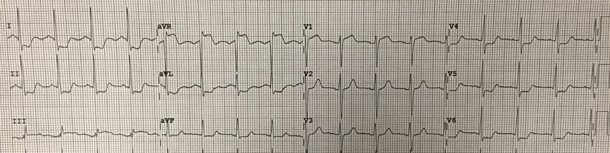
| Đây là ca tắc cấp 100% thân chung. Bản ghi cho thấy hình ảnh Aslanger, với ST chênh xuống lan tỏa (thiếu máu cục bộ dưới nội tâm mạc), NHƯNG cũng có STE ở chuyển đạo III, cho thấy OMI thành dưới Điều này đi ngược nguyên tắc của tôi rằng ST chênh xuống lan tỏa, kèm STE soi gương ở aVR, KHÔNG gặp trong tắc hoàn toàn. Tại sao? Dưới đây là phim chụp mạch vành. Bạn sẽ thấy có tuần hoàn bàng hệ từ RCA. |

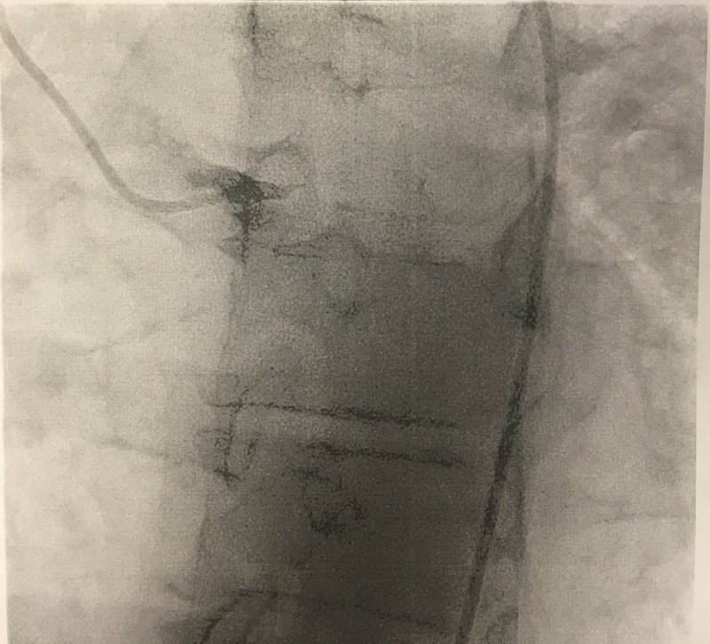
| Thân chung quả thật bị tắc 100% |
Nhưng phim chụp RCA cho thấy có tuần hoàn bàng hệ từ RCA cấp máu dưới thượng tâm mạc cho các vùng khác:

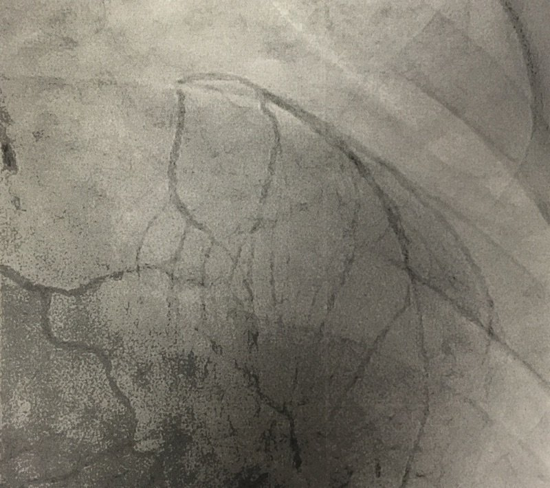
| Toàn bộ dòng chảy ở phía trên bên phải đang đi từ RCA vào vùng chi phối của LAD |
Ca 8.

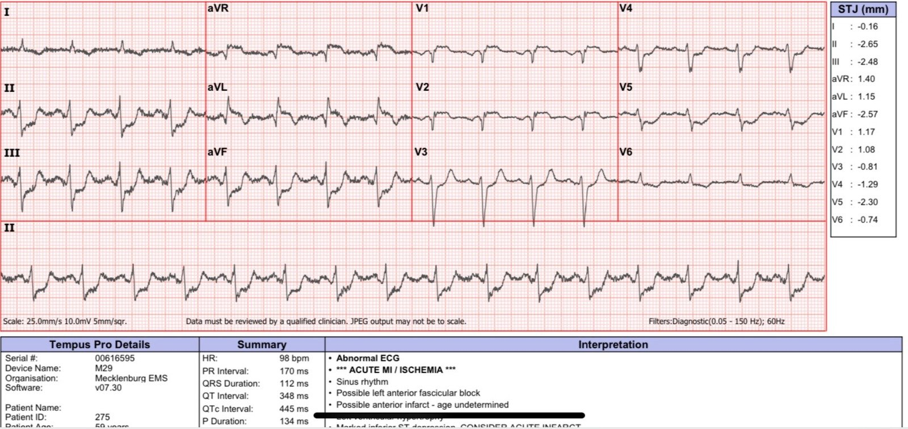
Đây lại là OMI phía Bắc, với STE ở aVR, V1, aVL và V2. Vectơ ST hướng lên trên với ST chênh xuống soi gương ở thành dưới
Ca 9.
Đây lại là OMI phía Bắc, với STE ở aVR, V1, aVL và V2. Vectơ ST hướng lên trên với ST chênh xuống soi gương ở thành dưới

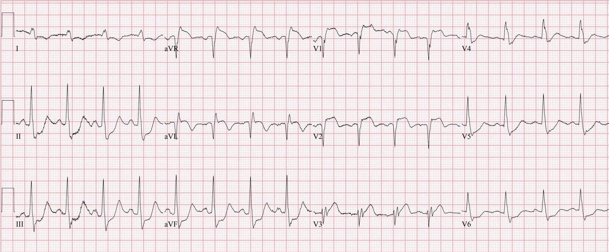
Tắc 100% thân chung động mạch vành trái. Đáng tiếc, bệnh nhân này đã không thể cứu được.
Phần dưới đây được phỏng theo (và cập nhật) từ bài báo của tôi trên Canadian Journal of Cardiology:
New Insights into the Use ofthe 12-Lead Electrocardiogram for Diagnosing Acute Myocardial Infarction in the Emergency Department. (Những hiểu biết mới về việc sử dụng điện tâm đồ mười hai chuyển đạo để chẩn đoán nhồi máu cơ tim cấp tại khoa cấp cứu)
Chuyển đạo aVR trong hội chứng vành cấp (61)
Nhiều chuyên gia coi hình ảnh điện tâm đồ STE ở aVR, kèm ST chênh xuống lan tỏa ở nơi khác (ở đây gọi là “hình ảnh STE aVR”), là biểu hiện của OMI thân chung (LM).(7) Hướng dẫn STEMI 2013 của ACC/AHA coi đây là một “tương đương STEMI”, trong đó điều trị tiêu sợi huyết không bị chống chỉ định (mức bằng chứng B, không có nhóm khuyến cáo cụ thể).(16) Tuy nhiên, các kết luận này dựa trên những nghiên cứu mà tổn thương thân chung không phải là tắc gần hoàn toàn hoặc tắc hoàn toàn thực sự (tức là dòng chảy TIMI 0/1).(61,62) Giới can thiệp định nghĩa bệnh thân chung gây tắc nghẽn là >50% theo FFR, hoặc hẹp ≥75%,(63) nhưng can thiệp khẩn hoặc cấp cứu đối với những tổn thương không đạt các ngưỡng này chỉ bắt buộc khi đó là tổn thương có huyết khối và bệnh nhân có triệu chứng thiếu máu cục bộ kháng trị (tức là không hết khi dùng nitrat, thuốc kháng tiểu cầu và thuốc chống huyết khối). (Xem 3 ví dụ trong phụ lục: Hình S7a, S7b và S7c) Mặc dù gần một nửa số bệnh nhân có STE ≥1 mm ở aVR do ACS sẽ cần phẫu thuật bắc cầu chủ vành để tái thông mạch,(61) động mạch gây nhồi máu thường không phải là thân chung, mà là LAD hoặc bệnh 3 nhánh mạch vành nặng. Quan trọng hơn, các dấu hiệu điện tâm đồ như vậy thường do các nguyên nhân không gây tắc (ví dụ LVH nền, thiếu máu cục bộ do tăng nhu cầu thứ phát sau suy hô hấp, hẹp van động mạch chủ, sốc mất máu).
Knotts và cs. (xem chi tiết bên dưới) nhận thấy chỉ 23% bệnh nhân có hình ảnh STE aVR có bất kỳ bệnh thân chung nào (ít hơn nếu định nghĩa là hẹp ≥ 50%). Chỉ 28% bệnh nhân có ACS ở bất kỳ nhánh mạch nào, và trong số đó, thân chung là thủ phạm ở chỉ 49% (14% tổng số ca).(56) Đây là một dấu hiệu
có sẵn từ nền ở 62% bệnh nhân, thường do LVH.
Harhash và cs. (xem bên dưới) nhận thấy trong số 80 bệnh nhân có STE ở aVR được chụp mạch vành, tắc mạch vành được cho là thủ phạm chỉ được xác định ở 8 bệnh nhân (10%), và không tổn thương nào là ở thân chung hay LAD.
Do đó, một số bài tổng quan của chuyên gia nhấn mạnh độ đặc hiệu thấp của hình ảnh STE
aVR, và ưu tiên gọi nó là thiếu máu cục bộ dưới nội tâm mạc toàn chu vi; trong
hội chứng này, STE ở aVR là STE soi gương, soi gương với một vectơ ST chênh xuống hướng về
các chuyển đạo II và V5.(8,10,61) Hình ảnh STE aVR cũng không nhạy đối với OMI thân chung. Mặt khác, STEMI thành trước kèm đồng thời blốc nhánh phải mới và blốc phân nhánh
trái trước gợi ý mạnh OMI thân chung.(64 65) (Xem ví dụ điện tâm đồ 12 chuyển đạo trong phụ lục: Hình
S8)
Cần nhấn mạnh lại rằng OMI thân chung thực sự (tức là dòng chảy TIMI 0) hiếm gặp ở khoa cấp cứu,
vì phần lớn hoặc tử vong trước khi đến viện hoặc được nhận biết trên lâm sàng do sốc tim.
Do đó, độ đặc hiệu được báo cáo của STE ở aVR đối với OMI thân chung dẫn đến giá trị tiên đoán
dương rất thấp. Trong số những người đến được khoa cấp cứu, nhiều người biểu hiện STE rõ ràng.(65, 64, 61) ACC/AHA nêu rằng thuốc tiêu sợi huyết không bị chống chỉ định đối với STD lan tỏa
“đi kèm với” STE ở aVR. Do độ đặc hiệu kém của hình ảnh này đối với OMI thân chung, chúng tôi
đề nghị chỉ nên cân nhắc thuốc tiêu sợi huyết ở những bệnh nhân có ST chênh xuống
sâu, rõ ràng do ACS, kháng trị với mọi biện pháp điều trị nội khoa khác,
và chỉ khi hoàn toàn không thể thực hiện PCI.
Chuyển đạo aVR trong STEMI
Một số bệnh nhân có điện tâm đồ đã đạt tiêu chuẩn STEMI quy ước cũng có thể
có STE ở chuyển đạo aVR. Dấu hiệu này không làm thay đổi nhu cầu tiến hành tái tưới máu
cấp cứu, dù có thể gợi ý tiên lượng xấu hơn.(61,66) Ở bệnh nhân vốn đã có
STE đủ để chẩn đoán, STE thêm ở aVR không biểu thị OMI thân chung và không giúp ích trong
chẩn đoán động mạch liên quan đến nhồi máu hay vị trí tắc.(67) Dưới 3% STEMI
thành trước có OMI thân chung, và phần lớn được nhận biết trên lâm sàng do sốc tim. (68, 69)
Cuối cùng, có một loạt ca tắc hoàn toàn thân chung trong y văn (tài liệu tham khảo 64), và loạt ca này cũng có 7 ca. Dưới đây là một đoạn từ công trình đó; phần giới thiệu của công trình này cũng mở đầu bằng nhận định rằng phần lớn bệnh nhân tắc hoàn toàn thân chung không sống sót, và chỉ 3 trong số 7 ca này sống sót:
“Theo hiểu biết của chúng tôi, chưa có loạt ca nào mô tả tắc thân chung động mạch vành trái (LMT) (dòng chảy TIMI = 0) với hình ảnh STEMI được công bố trong y văn. Chúng tôi nhận thấy hình ảnh điện tâm đồ điển hình nhất trong loạt ca nhỏ của chúng tôi là hình ảnh được mô tả trong tắc đoạn gần của một LAD dài, gồm ST chênh lên ở các chuyển đạo trước tim từ V2 đến V4 cho tới V6 và ở các chuyển đạo I và aVL, cũng như ST chênh xuống ở các chuyển đạo dưới16 và thường kèm RBBB và LAH (LAFB). Trong tắc hoàn toàn LMT, có sự liên quan của động mạch mũ trái, vốn tạo ra ST chênh xuống ở V1 và aVR, và do đó làm giảm ST chênh lên ở cả hai chuyển đạo này. Điều này gây ra việc không có các thay đổi ST ở V1 và aVR, vốn thường gặp trong tắc hoàn toàn một LAD dài. Tuy nhiên, chúng ta phải nhớ rằng trong các trường hợp tắc LAD đoạn gần trước nhánh vách thứ nhất, ST chênh lên không phải lúc nào cũng có ở V1 (mặc dù tắc LAD ở đoạn gần trước nhánh xuyên vách thứ nhất) nếu tồn tại một nhánh nón lớn của động mạch vành phải (RCA)17 cùng với nhánh vách thứ nhất tưới máu cho phần cao của vách liên thất. Sự tưới máu kép cho phần cao của vách liên thất này giúp bảo vệ khỏi thiếu máu cục bộ. Những bệnh nhân tắc LMT còn sống sót thường có RCA ưu thế rất mạnh và tình trạng huyết động kém khi so với những bệnh nhân tắc LAD đoạn gần.”
2 nghiên cứu quan trọng được sao chép từ bài này
1. Knotts và cs. nhận thấy các dấu hiệu điện tâm đồ như vậy (STE ở aVR) chỉ biểu thị ACS thân chung ở 14% các điện tâm đồ đó:
Chỉ 23% bệnh nhân có hình ảnh STE aVR có bất kỳ bệnh thân chung nào (ít hơn nếu định nghĩa là hẹp ≥ 50%). Chỉ 28% bệnh nhân có ACS ở bất kỳ nhánh mạch nào, và trong số đó, thân chung là thủ phạm ở chỉ 49% (14% tổng số ca). Đây là một dấu hiệu có sẵn từ nền ở 62% bệnh nhân, thường do LVH.
Tài liệu tham khảo: Knotts RJ, Wilson JM, Kim E, Huang HD, Birnbaum Y. Diffuse ST depression with ST elevation in aVR: Is this pattern specific for global ischemia due to left main coronary artery disease? J Electrocardiol 2013;46:240-8. (ST chênh xuống lan tỏa kèm ST chênh lên ở aVR: hình ảnh này có đặc hiệu cho thiếu máu cục bộ toàn bộ do bệnh thân chung động mạch vành trái không?)
2. Hiện đã có một bài báo công bố năm 2019 chứng minh điều này một cách không còn nghi ngờ, dù cũng làm rõ rằng hình ảnh này đi kèm tỷ lệ tử vong rất cao.
https://www.sciencedirect.com/science/article/abs/pii/S000293431930049X (tóm tắt bài báo trên ScienceDirect)
Harhash AA và cs. aVR ST Segment Elevation: Acute STEMI or Not? Incidence of an Acute Coronary Occlusion (Đoạn ST chênh lên ở aVR: STEMI cấp hay không? Tỷ lệ tắc mạch vành cấp). Tạp chí American Journal of Medicine 132(5):622-630; tháng Năm năm 2019.
= = =
Dưới đây là phần Tóm tắt của Harhash và cs.
Bối cảnh: Việc nhận diện nhồi máu cơ tim ST chênh lên (STEMI) có ý nghĩa sống còn vì tái tưới máu sớm có thể cứu vớt cơ tim và tăng tỷ lệ sống còn. ST chênh lên (STE) ở chuyển đạo tăng thế vectơ phải (aVR), kèm theo ST chênh xuống ở nhiều chuyển đạo, đã được hướng dẫn STEMI năm 2013 công nhận là một dấu hiệu của tắc cấp thân chung động mạch vành trái hoặc tắc đoạn gần động mạch liên thất trước. Chúng tôi khảo sát tỷ lệ có một động mạch vành bị tắc cấp ở những bệnh nhân đến viện với STE-aVR kèm ST chênh xuống ở nhiều chuyển đạo.
Phương pháp: Xác định các trường hợp kích hoạt báo động STEMI từ tháng Một năm 2014 đến tháng Tư năm 2018 tại Trung tâm Y khoa Đại học Arizona (University of Arizona Medical Center). Toàn bộ điện tâm đồ (ECG) và phim chụp mạch vành được các bác sĩ tim mạch giàu kinh nghiệm phân tích theo kiểu đọc mù. Trong 847 lần kích hoạt báo động STEMI, có 99 bệnh nhân (12%) được xác định có STE-aVR kèm ST chênh xuống ở nhiều chuyển đạo.
Bình luận của Smith: đây là một quần thể rất hạn chế, vì chỉ bao gồm những trường hợp đã được kích hoạt báo động STEMI. Nhiều khả năng còn nhiều bệnh nhân khác có STE-aVR nhưng không được kích hoạt báo động STEMI vì không bị nghi ngờ có ACS.
Kết quả: Chụp mạch vành cấp cứu được thực hiện ở 80% (79/99) bệnh nhân. Ba mươi sáu bệnh nhân (36%) nhập viện trong tình trạng ngừng tim, và 78% (28/36) trong số đó được chụp mạch vành cấp cứu. Tắc mạch vành được cho là thủ phạm chỉ được xác định ở 8 bệnh nhân (10%), và không tổn thương nào trong số đó là tắc thân chung động mạch vành trái hay tắc động mạch liên thất trước. Tổng cộng 47 bệnh nhân (59%) được phát hiện có bệnh mạch vành nặng, nhưng phần lớn vẫn còn dòng chảy phía xa. Ba mươi hai bệnh nhân (40%) có bệnh nhẹ đến vừa hoặc không có bệnh đáng kể. Tuy nhiên, STE-aVR kèm ST chênh xuống ở nhiều chuyển đạo có liên quan với tỷ lệ tử vong trong bệnh viện 31%, so với chỉ 6.2% ở một phân nhóm 190 bệnh nhân STEMI không có STE-aVR (p nhỏ hơn 0.00001).
Bình luận: Một lần nữa, nghiên cứu này không bao gồm rất nhiều bệnh nhân STE-aVR không được kích hoạt báo động, nên số người có ACS còn ít hơn nữa, và tỷ lệ tử vong trong nhóm này cao hơn nhiều so với toàn bộ bệnh nhân STE-aVR.
Kết luận: STE-aVR kèm ST chênh xuống ở nhiều chuyển đạo chỉ liên quan đến tắc mạch vành do huyết khối cấp ở 10% bệnh nhân. Việc kích hoạt báo động STEMI thường quy khi có STE-aVR để tái thông mạch cấp cứu là không có cơ sở, mặc dù thông tim khẩn (thay vì cấp cứu) có vẻ là quan trọng.
Tài liệu tham khảo
Rokos IC, French WJ, Mattu A, và cs. Appropriate cardiac cath lab activation:
optimizing electrocardiogram interpretation and clinical decision-making for acute STelevation myocardial infarction. Tạp chí American heart journal 2010;160:995-1003, .e1-8.
O’Gara PT, Kushner FG, Ascheim DD, và cs. 2013 ACCF/AHA guideline for the
management of ST-elevation myocardial infarction: a report of the American College of
Cardiology Foundation/American Heart Association Task Force on Practice Guidelines.
Tạp chí Journal of the American College of Cardiology 2013;61:e78-140.
Smith SW. Updates on the Electrocardiogram in Acute Coronary Syndromes.
Tạp chí Current Emergency and Hospital Medicine Reports 2013;1:43-52.
Jong GP, Ma T, Chou P, Shyu MY, Tseng WK, Chang TC. Reciprocal changes in
12-lead electrocardiography can predict left main coronary artery lesion in patients with
acute myocardial infarction. Tạp chí International heart journal 2006;47:13-20.
Stone GW, Sabik JF, Serruys PW, và cs. Everolimus-Eluting Stents or Bypass
Surgery for Left Main Coronary Artery Disease. Tạp chí The New England journal of medicine
2016;375:2223-35.
Fiol M, Carrillo A, Rodriguez A, Pascual M, Bethencourt A, Bayes de Luna A.
Electrocardiographic changes of ST-elevation myocardial infarction in patients with complete occlusion of the left main trunk without collateral circulation: differential
diagnosis and clinical considerations. Tạp chí J Electrocardiol 2012;45:487-90.
Widimsky P, Rohac F, Stasek J, và cs. Primary angioplasty in acute myocardial
infarction with right bundle branch block: should new onset right bundle branch block be
added to future guidelines as an indication for reperfusion therapy? Tạp chí European heart
journal 2012;33:86-95.
Kukla P, Bryniarski L, Dudek D, Krolikowski T, Kawecka Jaszcz K. Prognostic
significance of ST segment changes in lead aVR in patients with acute inferior
myocardial infarction with ST segment elevation. Tạp chí Kardiologia polska 2012;70:111-8.
Kosuge M, Ebina T, Hibi K, và cs. An early and simple predictor of severe left
main and/or three-vessel disease in patients with non-ST-segment elevation acute
coronary syndrome. Tạp chí The American journal of cardiology 2011;107:495-500.
Zoghbi GJ, Misra VK, Brott BC, và cs. ST Elevation Myocardial Infarction Due To
LEFT Main Culprit Lesions: Percutaneous Coronary Intervention Outcomes. Tạp chí Journal of
the American College of Cardiology 2010;55:A183.E1712.
Kurisu S, Inoue I, Kawagoe T, và cs. Electrocardiographic features in patients with
acute myocardial infarction associated with left main coronary artery occlusion. Tạp chí Heart
(British Cardiac Society) 2004;90:1059-60.